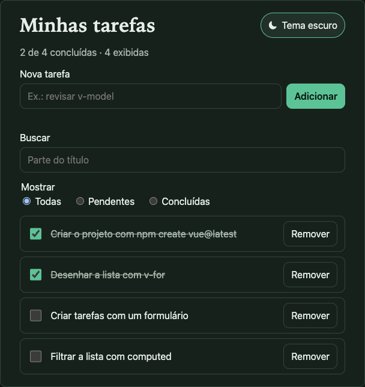

Desafio: lembrar o tema escolhido e focar o campo ao abrir
Prático 3 da unidade (tema claro/escuro), corrigido e ligado ao Vue: o estado muda, um efeito acontece fora do template.
| Critério | Evidência |
|---|---|
Efeito com watch | Tema salvo e mantido após recarregar |
| Agir quando o DOM existe | Cursor no campo “Nova tarefa” ao abrir |
Distinguir computed e watch | Um exemplo de cada na Todo List |
computed calcula; watch executa efeitos
computed | watch | |
|---|---|---|
| Para quê | Calcular um valor a partir do estado | Fazer algo quando o estado muda |
| Devolve | Um valor (somente leitura) | Nada; executa uma função |
| Exemplo | visiveis, concluidas | Gravar no localStorage; mudar o <html> |
| Opções | — | immediate (já na criação), deep (mudanças internas) |
const temaSalvo = lerTemaSalvo() // utils/tema.js
if (temaSalvo) aplicarTema(temaSalvo)
const temaEscuro = ref((temaSalvo ?? temaDoSistema()) === 'escuro')
// quando temaEscuro MUDA → efeito fora do template
watch(temaEscuro, (escuro) => {
const tema = escuro ? 'escuro' : 'claro'
aplicarTema(tema) // data-tema no <html>
salvarTema(tema) // localStorage, com try/catch
})O tema muda, é salvo e volta depois de recarregar
<button type="button" class="botao alternar-tema"
:aria-pressed="temaEscuro"
@click="temaEscuro = !temaEscuro">
<span aria-hidden="true">{{ temaEscuro ? '☾' : '☀' }}</span>
Tema escuro
</button>
Tela real após o clique: fundo #101713, botão com aria-pressed="true".
antes do clique aria-pressed="false"
depois do clique aria-pressed="true" <html data-tema="escuro">
localStorage todo-list:tema = "escuro"
recarregado aria-pressed="true" <html data-tema="escuro">DevTools › Application › Local Storage: a chave todo-list:tema. Apague-a e recarregue: volta a seguir o sistema.
ObserveAo recarregar, o cursor já está em “Nova tarefa”. Quem fez isso, e em que momento?
Prática: lembrar também a busca
- 1
- Crie
CHAVE_BUSCAe inicializebuscacom o valor salvo (ou''). - 2
- Com
watch(busca, …), grave a cada mudança, comtry/catch. - Evidência
- Digite, recarregue: a busca e a lista filtrada continuam.
Dica
Copie o desenho de lerTemaSalvo/salvarTema: ler no início, gravar no watch.
Mostrar solução (após a tentativa)
const CHAVE_BUSCA = 'todo-list:busca'
function lerBusca() {
try {
return localStorage.getItem(CHAVE_BUSCA) ?? ''
} catch {
return ''
}
}
const busca = ref(lerBusca())
watch(busca, (valor) => {
try {
localStorage.setItem(CHAVE_BUSCA, valor)
} catch {
// sem armazenamento: a busca vale só nesta aba
}
})Ciclo de vida: o DOM só existe depois de montar
const campoTitulo = useTemplateRef('campoTitulo')
// aqui campoTitulo.value ainda é null
onMounted(() => {
campoTitulo.value?.focus()
})No template: <input ref="campoTitulo" …>. Foco automático só quando o campo é a ação principal da página.
Investigação: focar antes de montar
campoTitulo.value.focus() // direto no setup
onMounted(() => {})[Vue warn]: Unhandled error during execution of setup function
at <App>
Uncaught TypeError: Cannot read properties of null
(reading 'focus')- “setup function” na mensagem: o erro aconteceu antes da montagem.
- “null (reading 'focus')”: o elemento ainda não existia.
- Correção: mover para o
onMounted.
Mostrar solução
Tudo que depende do DOM do componente vai para o onMounted. O ?. em campoTitulo.value?.focus() protege o caso raro em que o elemento não foi desenhado (por exemplo, dentro de um v-if falso).
Pesquisar: o diagrama do ciclo de vida e o padrão do botão alternável
Neste componente Vue 3 com <script setup>, decida para cada trecho se
ele deveria estar num computed, num watch ou num
onMounted, justificando: [cole o script do App.vue]. Use
como referência as páginas Watchers e Lifecycle Hooks da documentação oficial.
Onde procurar
- Lifecycle Diagram
- WAI-ARIA APG — Button (toggle com
aria-pressed) - MDN — light-dark()
Verificação sem IA
- 1
- “Mostrar quantas tarefas estão atrasadas”:
computedouwatch? - 2
- “Enviar um aviso ao servidor quando a lista mudar”:
computedouwatch? - 3
- Por que
campoTitulo.valueénullno setup?